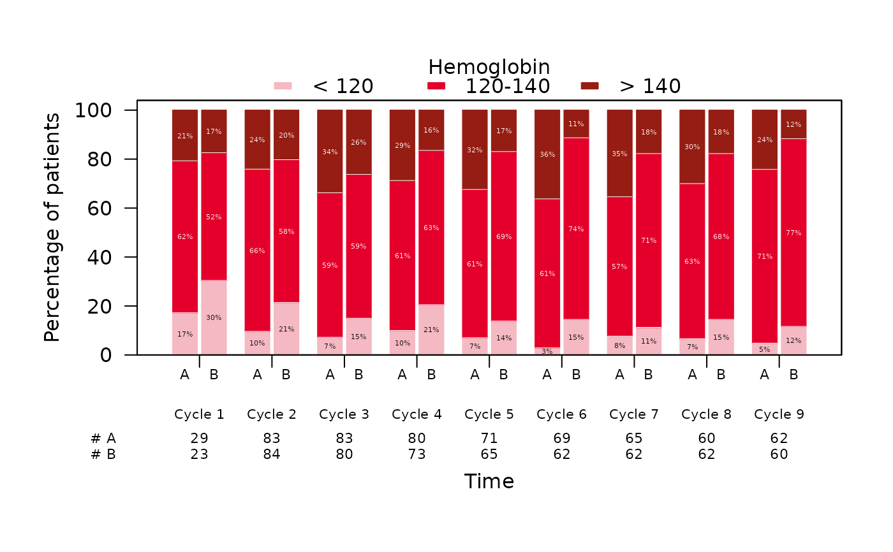
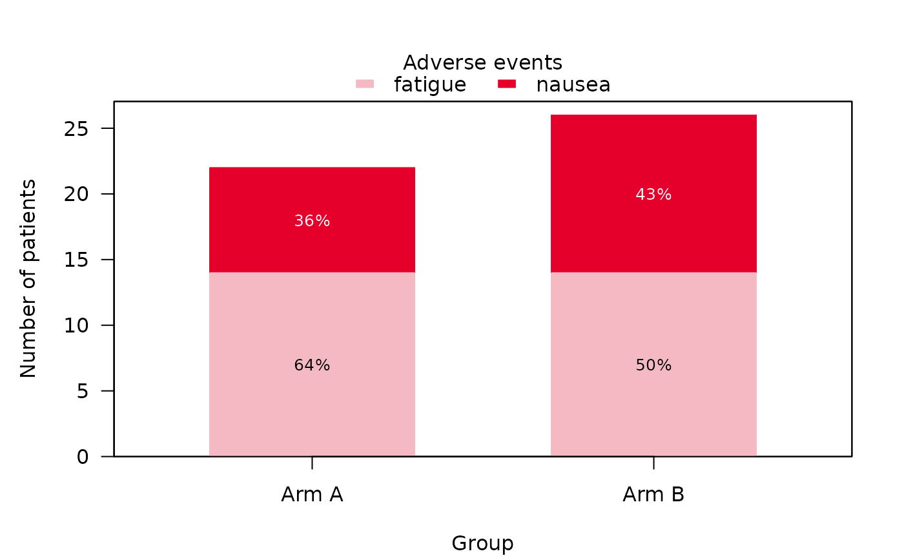

Generates stacked barplots of a categorical variable over time for one or
multiple sub-groups. Each bar shows the distribution of the levels of var
at one time point in one group, optionally with the percentages printed
inside the segments and a table of patient numbers beneath the horizontal
axis.
Usage
stackedbarplotSCI(
data,
var,
order = NULL,
visit = NULL,
group = NULL,
id = NULL,
group_names = NULL,
group_names_short = NULL,
level_names = NULL,
scale = c("percent", "count"),
missing = FALSE,
missing_text = "Missing",
main = "",
xlab = NULL,
ylab = NULL,
ylim = NULL,
y_ticks = NULL,
col = NULL,
greyscale = FALSE,
percent_labels = TRUE,
col_percent = NULL,
cex_percent = NULL,
digits = 0,
bar_width = NULL,
cex_lab = 1,
cex_axis = 1,
cex_n_patients = 0.7,
cex_groups = NULL,
risk_table = FALSE,
missing_nr = 0,
rotate_labels = FALSE,
mar_custom = NULL,
xlab_line = NULL,
ylab_line = 3,
xlab_position = NULL,
legend_position = "top",
legend_title = NULL,
legend_offset = c(0, 0),
legend_cex = 1,
legend_bty = "n",
stat_footnote = FALSE,
...
)Arguments
- data
A data frame or tibble containing the data to be plotted.
- var
Name of the column(s) in
datato be stacked. A single column supports bare or quoted names; several columns are given as a character vector.- order
Name of the column in
datacontaining the time points of interest. Numeric time points are sorted numerically; factors keep their level order; character values are sorted by the number they contain (e.g."Visit 2"before"Visit 10"), or by order of appearance if they contain none. If left empty, a single time point is assumed and one bar is drawn per group. Rows with a missing time point are dropped.- visit
Name of the column in
datacontaining descriptive labels for the time points (the first label observed at each time point is used). Optional.- group
Name of the column in
datacontaining the grouping variable (e.g., treatment arms). If left empty, a single group is assumed. Rows with a missing group are dropped.- id
Name of the column in
dataidentifying the patient. Only used whenvarnames several Yes/No columns, as the denominator of the percentages. Default isNULL, which counts rows instead.- group_names
A character vector containing the names of the groups to be displayed on the x-axis. The order must match
levels(factor(data$group)). Default isNULL, which falls back to the group names found in the data.- group_names_short
A character vector containing short names or abbreviations for the groups, displayed beneath the bars and in the table of patient numbers. Optional. Defaults to
group_names.- level_names
A character vector containing the names of the stacked segments to be displayed in the legend. The order must match the levels of
var(or the columns invar). Default isNULL, which uses the levels (or column names) themselves.- scale
The quantity on the y-axis. Either
"percent"(the default) or"count".- missing
A logical toggle switch adding missing values of
varas a segment of their own, on top of the stack, hatched in grey on white rather than coloured. Default isFALSE, which drops them. Only used whenvaris a single column.- missing_text
Legend text for the missing-value segment. Default is
"Missing".- main
Title of the plot. Defaults to
""(no title).- xlab
A label for the x-axis. Default is
NULL, which uses"Time"if there are several time points, otherwise"Group".- ylab
A label for the y-axis. Default is
NULL, which uses"Percentage of patients"or"Number of patients"depending onscale.- ylim
The y-axis limits of the plot as a numeric vector of length 2. Default is
NULL, which spans0to100for percentages (more if the stacks exceed 100%) and0to the tallest stack for counts.- y_ticks
A numeric vector specifying the explicit tick positions on the y-axis. Default is
NULL, which falls back to automatic tick placement.- col
A character vector of hex colors or color names to use for the stacked segments, bottom to top. Recycled if shorter than the number of segments. The missing-value segment (see
missing) is always hatched and takes no color. Default isNULL, which applies the SCI color palette without its lightest shade.- greyscale
A logical toggle switch replacing the color palette by a sequential grey ramp, for print or black-and-white reproduction. Default is
FALSE. Ignored ifcolis supplied.- percent_labels
A logical toggle switch enabling the percentage labels printed inside the segments. Default is
TRUE. Empty segments, and segments too thin to hold a label, are left unlabelled.- col_percent
A character value giving the color of the percentage labels. Default is
NULL, which picks black or white per segment, whichever contrasts better with the fill.- cex_percent
A numeric value specifying the font size of the percentage labels. Default is
NULL, which sizes them to fit the width of the bars (at most0.8). A number is used as given, even if labels then overflow narrow bars.- digits
A numeric value indicating the number of decimal places shown in the percentage labels. Default is
0.- bar_width
A numeric value giving the width of each bar in x-axis units. Default is
NULL, which fills about 70% of each time point with the cluster of group bars.- cex_lab
A numeric value specifying the font size of the main axis labels. Default is
1.- cex_axis
A numeric value specifying the font size of the axis tick marks. Default is
1.- cex_n_patients
A numeric value specifying the font size of the table of patient numbers. Default is
0.7.- cex_groups
A numeric value specifying the font size of the group labels beneath the bars (several groups over time). Default is
NULL, which usescex_n_patientsand shrinks the labels until they fit the bars. A number is used as given, even if long labels then overlap.- risk_table
A logical toggle switch enabling the table of patient numbers (the denominator of each bar) beneath the x-axis. Default is
FALSE.- missing_nr
A numeric or character value indicating how zero-count patient sizes on the x-axis should be displayed. Default is
0. Can also be set toNA, which leaves the cell blank.- rotate_labels
A logical toggle switch rotating the x-axis tick labels by 90 degrees. Default is
FALSE.- mar_custom
A numeric vector indicating the plot margins to be used in the form
c(bottom, left, top, right). Default isNULL, which dynamically calculates spacing for the labels, the table of patient numbers and the legend.- xlab_line
A numeric value indicating the margin line offset for the x-axis label. Default is
NULL, which calculates an adaptive offset.- ylab_line
A numeric value indicating the margin line offset for the y-axis label. Default is
3.0.- xlab_position
Horizontal position of the row labels of the table of patient numbers. Default is
NULL, which aligns them just outside the plot region.- legend_position
Position of the legend box.
"top"(the default) places it in one row above the bars, which keeps their full width;"right"places it outside the plot region to the right of the bars;"none"orNULLsuppresses it. Other base R keywords (e.g.,"topright") place it inside the plot region, and a numeric pairc(x, y)gives explicit coordinates. The margins are sized to the legend text.- legend_title
Title of the legend box. Default is
NULL(no title).- legend_offset
A numeric vector of length 2 specifying an
insetto nudge a keyword-placed legend. Default isc(0, 0).- legend_cex
A numeric value specifying the font and element scaling size inside the legend box. Default is
1.- legend_bty
The type of box border to be drawn around the legend. Allowed values are
"n"(no border, the default) and"o"(standard box frame).- stat_footnote
Show what the bars display as a footnote in the bottom-right corner, beneath the x-axis title:
TRUEfor the default text (e.g."\% of patients with a non-missing value"), a character string for a text of your own, orFALSE(the default) for none.- ...
Further graphical parameters passed on to
plot().
Value
Invisibly, a list with counts and percent, arrays indexed by
segment, group and time point, and n, the group-by-time matrix of
denominators.
Details
Two layouts of the data are supported:
varnames one categorical column (long format): its levels are stacked, and percentages are relative to the number of non-missing observations in the bar (or all observations ifmissing = TRUE).varnames several columns coded"Yes"/"No"(wide format, e.g. one column per adverse event): each column becomes one segment holding the number of"Yes"answers, and percentages are relative to the number of patients in the bar (id, or rows ifidisNULL). Missing values count as"No". Since a patient may answer"Yes"to several columns, the segments can add up to more than 100%.
Examples
library(summarySCI)
data("hemoglobin_data")
hemoglobin_data$hb_cat <- cut(hemoglobin_data$hb, c(-Inf, 120, 140, Inf),
labels = c("< 120", "120-140", "> 140"))
stackedbarplotSCI(data = hemoglobin_data,
var = hb_cat,
order = visit_nr,
visit = visit,
group = Arm,
group_names_short = c("A", "B"),
legend_title = "Hemoglobin",
risk_table = TRUE)

# Several Yes/No columns, one bar per arm
set.seed(14)
ae <- data.frame(id = 1:50,
arm = sample(c("Arm A", "Arm B"), 50, replace = TRUE),
fatigue = sample(c("Yes", "No"), 50, replace = TRUE),
nausea = sample(c("Yes", "No"), 50, replace = TRUE))
stackedbarplotSCI(ae, var = c("fatigue", "nausea"), group = arm, id = id,
scale = "count", legend_title = "Adverse events")
